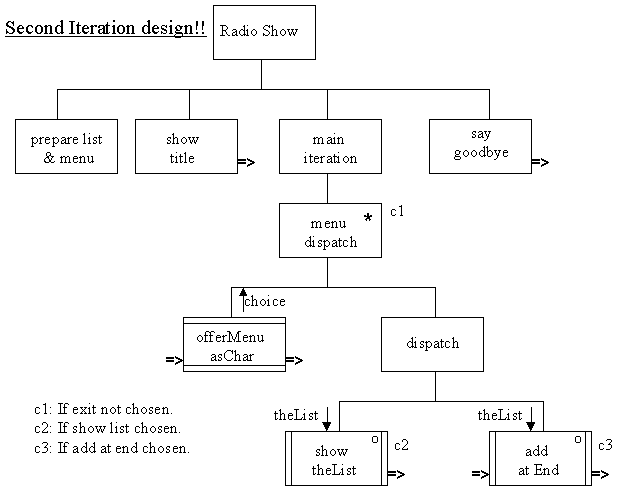
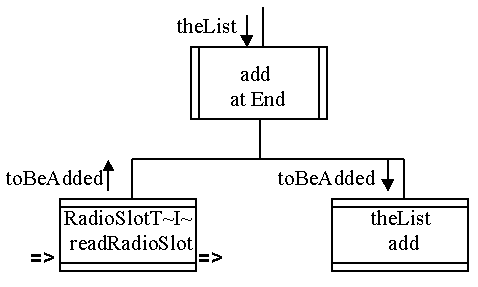
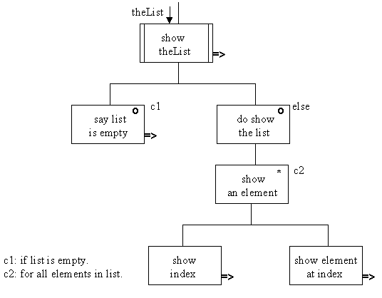

The high level design for the initial version of the application is as follows.

It differs from the first version of the design by the addition of a second dispatch option, called addAtEnd(), which takes theList as an argument which will obtain details of a RadioSlot from the user and add an instance to the Vector.
The design of the addAtEnd() method is as follows.

The design states that it obtains details of the RadioSlot toBeAdded by calling the pre-supplied RadioSlotTerminalInput readRadioSlot() method. Having obtained the instance it is added to theList by calling its add() method. This design can be implemented as follows.
The showTheList() method will need to be upgraded now that it is possible for theList to have csome contents. Its design is as follows.

The first level of the design is a two way selection between saying that the list is empty or actually showing the list. If the list is to be showed then an iteration will show each element in turn. To show a single element, first its index value is shown and then the lement itself is shown.